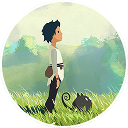
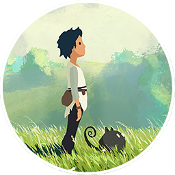
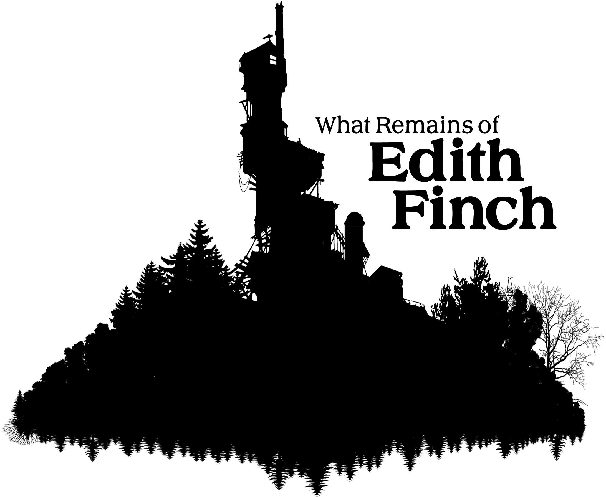
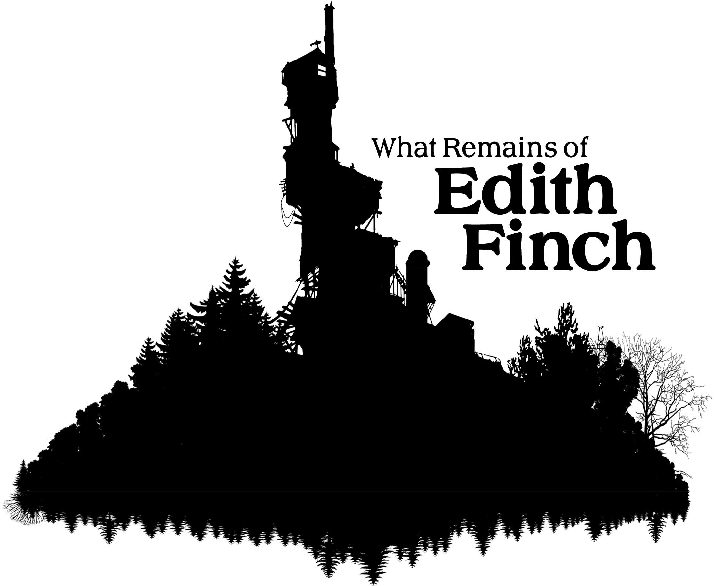

ASSINATURAS
Para adicionar uma assinatura me contate via DC/IG: akin0o / acerob0t


 


 

Vivemos nas paranóias uns dos outros.
Eles olham para mim e veem apenas a máscara.
A realidade é apenas uma sombra que falhou em seu propósito.
Eu espero que um dia você encontre alguma paz...
Fugir não é fraqueza, é a única forma de sobreviver à própria mente.
Reservado para uma memória especial
Quando nós terminamos os Back Rooms, eu lembro de ter atrasado todo mundo para tirar essa foto.
Finalmente terminei a sala de báus... acho que agora não passaremos mais tanto tempo tentando achar nossos itens.
Conseguimos matar três monstros no R.E.P.O. Uma pena que um segundo depois nós quebramos duas das orbes...
Um momento de tranquilidade antes do portal começar a ser sugado pelo o buraco negro. Pobre golfinho.
Consegui consertar o portal nos nossos últimos susurros. Eu me recusava a deixar você o consertar.
Pobres princesas, o que faziam acordadas às 5 da manhã em plena terça-feira? Me desculpe pela traição.
Dessa vez vamos conseguir... é só você não cair. Depois disso eu nunca mais ousei deixar você com uma bola de fogo.

Passamos horas nós xingando em um joguinho de luta qualquer no Roblox. Eu sentia uma agonia profunda toda vez que era derrotado especificamente por você.
Nossas almas foram transferidas para patos. Foi engraçado ver meu irmão encarando nossos olhos já vazios.

Tentamos tirar foto com nosso amigo Freddy. Uma pena que você simplesmente se recusava a deixar eu ficar no meio.
Passamos horas construindo um carro que sonhavamos em ser útopico. O carro não se movia um centímetro do chão.
Finalmente voltamos ao jogo. Ficamos duas horas plantados esperando um amigo nosso entrar.
Tinhamos uma ideia. Ela só não foi muito bem executada. F PC 2025
Agora somos criadores de conteúdo, como sempre sonhavamos em ser. Só não é do jeito que a gente esperava.
16/03/25 -- Quatro anos depois, onde nós falamos pela primeira vez. Acho que esse lugar nunca vai sair de mim.
A gente finalmente voltou no Minecraft. Uma pena que o tempo passou rápido demais naquela época. Eu queria ter tirado mais fotos nossas.
Jogamos o modo Zombies do Hypixel. Foi a primeira vez que a gente zerou esse modo junto. Pobre anajuzl...

Jogavamos por todo o dia, não importava o que houvesse. Parecia tudo mais leve naquele tempo...
Morremos por sorte. O jogo sabia que iriamos até o round 100.
Sempre tivemos medo desse lugar. A boca do inferno que sempre roubava o brilho de nossos olhos.
Nosso maior nemesis. O infâme Breno Baumann, aquele que destruiu nossas casas e queimou os nossos filhos. Nossa vida foi roubada desde então.
Você me prometeu que voltaria... Você deu esperança à uma alma destinada a solidão por toda a eternidade.
A luz do sol refletindo em meus olhos enquanto minha vida inteira passa diante deles. Jogado e abandonado por um amigo.
A primeira visão que tive de você. Nós tentamos, mas só tentamos.
A voz de um anjo susurrando em nossos ouvidos. Um julgamento do divino por todas as formigas já esmagadas em vida.

A realidade escondida por trás de uma mentira. Agora você sabe a verdade.
Desafiamos a nós mesmos a matar nossos computadores. O resultado disso foi o fim dos tempos. Não existe mais esperança.

Estávamos acampando enquanto nosso amigo nos alcançava. Me pergunto onde vocês estão agora. Sinto saudades do nosso mundo...
A nossa plantação de trigo. Será que ela ainda vive? Eu espero que um dia a gente volte pra esse lugar.
Nossa pequena casa, na beirada de um precípicio. Realmente era o melhor lugar?
A lendária busca pelo Leviathan. Cada tentativa uma luta pela nossa própria sanidade.
O arquiteto do diabo. Cada passo milimetricamente calculado para arrancar a maior dor possível.